APNs Push Notifications with AeroGear's UnifiedPush Server
The following step-by-step guides, give you an introduction on how to use the AeroGear UnifiedPush Server for sending Push Notifications to your own iOS Apps. The guide assumes you have an Apple developer account already setup as well as a real iOS device (not through emulator) for testing. So, let’s get started:
Apple related setup
Before you are able to use Push Notifications on your iOS Application, a few steps are required. This section of the tutorial gives a quick overview of what is needed!
Certificate Signing Request
First you need to submit a request for a new digital certificate, which is based on a public/private key. The Certificate itself is acting as the public key, and when you request it, a private key is added to your KeyChain tool. The Cerficate will be used later on, to request an SSL certificate for the Apple Push Network Service, which will allow the AeroGear Push Server to send notification messages to it. Now the actual CSR (Certificate Signing Request) is done using KeyChain Access tool found in Applications > Utilities folder on your Mac. Once opened, in the KeyChain Access menu, choose Certificate Assistant > Request a Certificate from a Certificate Authority:

Make sure that you have choosen to store the CSR on file, so we can upload it later in the provisioning portal when requesting the actual SSL cert. Going back to KeyChain Access you now see a new private key:

Apple App ID and SSL certificate for APNs
Now that the CSR is generated, go to the Provisioning Portal and log in with your Apple developer account. Now, click on the Identifiers link in order to create a new App ID (use the PLUS Icon on the right). In the formular give the App ID a descriptive name, like My first AeroGear Push App. Double check that the Push Notifications checkbox is selected:

Later in the same page you are asked for an Explicit App ID, since the generic Wildcard App ID does not work with Push Notifications. In the Bundle ID field enter YOUR bundle ID. This is similar to Java packages. In this example we choose org.aerogear.PushTest, however you must use your own ID. NOTE: The Bundle ID has to match the one from the actual iOS application that you are building later in this guide.
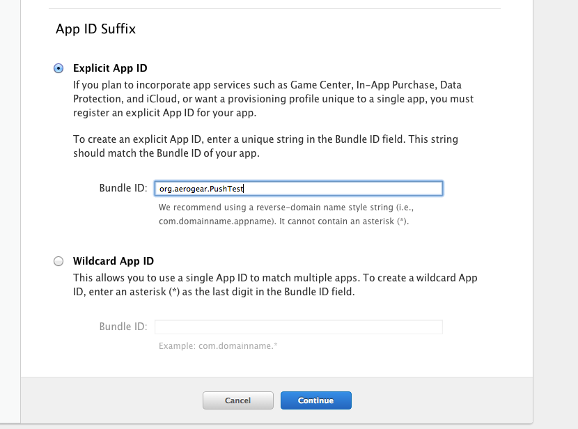
In the next screen confirm your new App ID, and double check that the Push Notifications option is enabled. Afterwards click the Submit button! Now you are Done. In the next screen, click on on the newly created App ID. After clicking on it, the following screen appears:
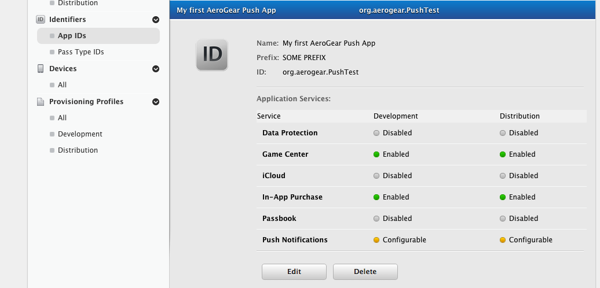
Click the Edit button and scroll down to the Push Notifications section. Here we are asked to generate a Development and a Production certificate that will be used by the UnifiedPush server when contacting the Apple Push Notification service to send messages. If you plan to distribute your app in the App Store, you are required to generate a Production certificate. In this guide we will generate both Certificates and register them with the UnifiedPush server.
Let’s start first by generating the Development Certificate. Click the Create Certificate… button on the Development SSL Certificate section:

Inside of the next Dialog you are asked to upload the Certificate Signing Request that we created earlier. Now perform an upload of the CSR and click the Generate button:
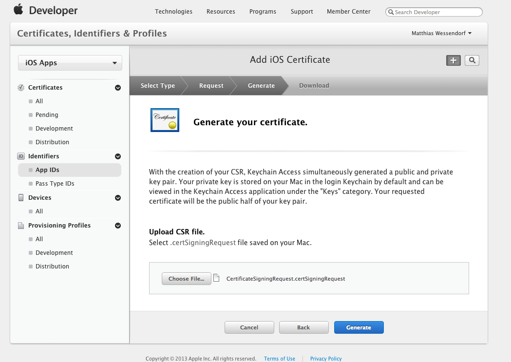
Finishing the upload dialog, you are coming back to the overview of the App ID.
Now click the Edit button again and scroll down to the Push Notifications section. Notice that the Development SSL Certificate section is filled with the required details.

Time now to create the Production certificate by following the same steps as previously, this time by clicking the 'Create Certificate' button on the Production SSL Certificate section. Once you are done, you are back to the overview of the App ID.
Click the Edit button again and scroll down to the Push Notifications section. Now that we have both Certificates generated, time to download them locally to your computer.
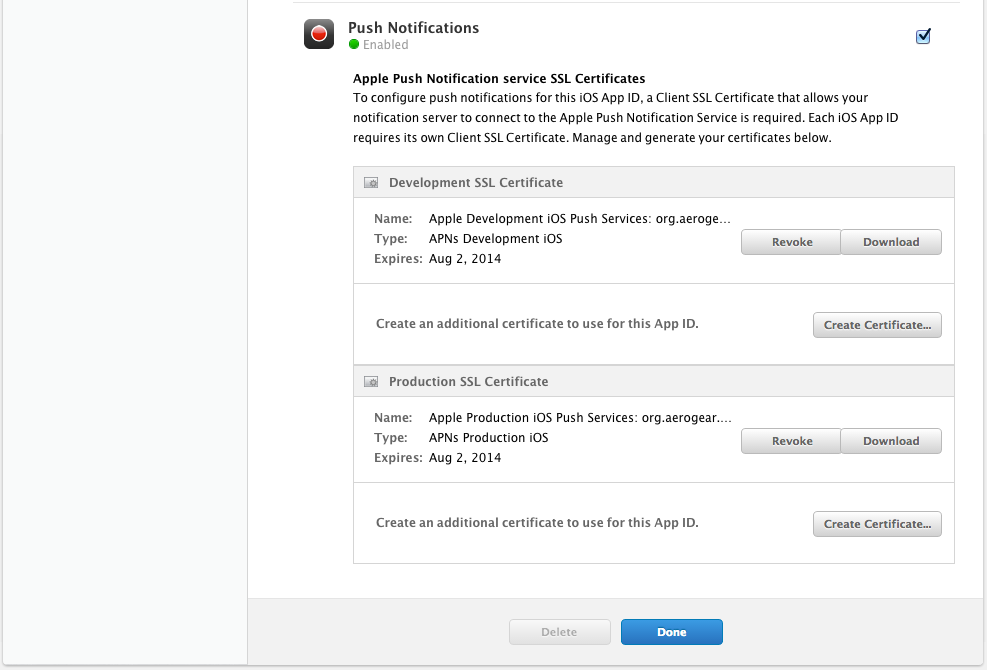
The Development SSL Certificate file is being downloaded as aps_development.cer. Double click on it and it will show up in the KeyChain Access tool:
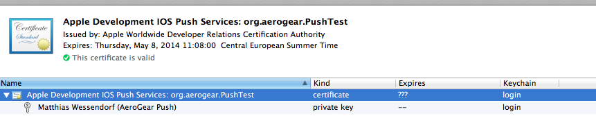
Now you have to export this certificate/private key pair to the .p12 (Personal Information Exchange). This file will be uploaded later on to the AeroGear Push Server enabling it to authorize itself for your development application on Apple Push Network Service and send messages to it.
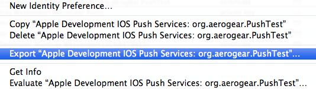
When exporting the file, as your private key, you need to assign a passphrase for it. Make note of it, because later when uploading it to the AeroGear Push Server you will need both the exported file and the passphrase.
Follow the same steps to download the Production SSL Certificate, the file is being downloaded as aps_production.cer. Double click to add in your KeyChain Access tool:

Now export it too as a .p12 (Personal Information Exchange). This file will be uploaded later on to the AeroGear Push Server enabling it to authorize itself for your production application on Apple Push Network Service and send messages to it. When exporting the file, as your private key, you need to assing a passphrase for it (this can be same or different with your passphrase for your development certificate).
Provisioning Profile
Next, you need to create an Apple Provisioning Profile
Creating a Provisioning Profile
Now that you have created an App ID and you got your SSL certificate, it’s time to create a Provisioning Profile
Development Provisioning Profile
In the Provisioning Portal you need to create an iOS App Development provisioning profile, so that you can test the Push Notifications on your own iOS devices:

Now, select the App ID, that you created earlier:
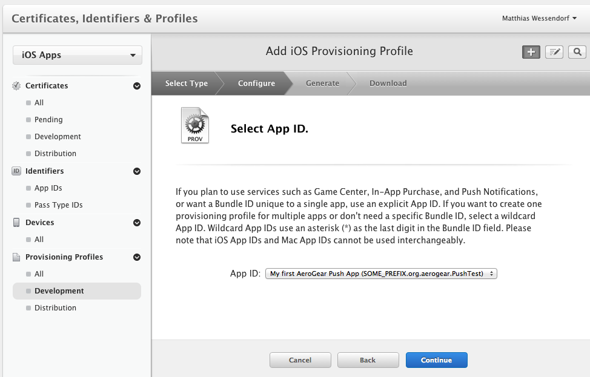
Select your Developer Certificate:
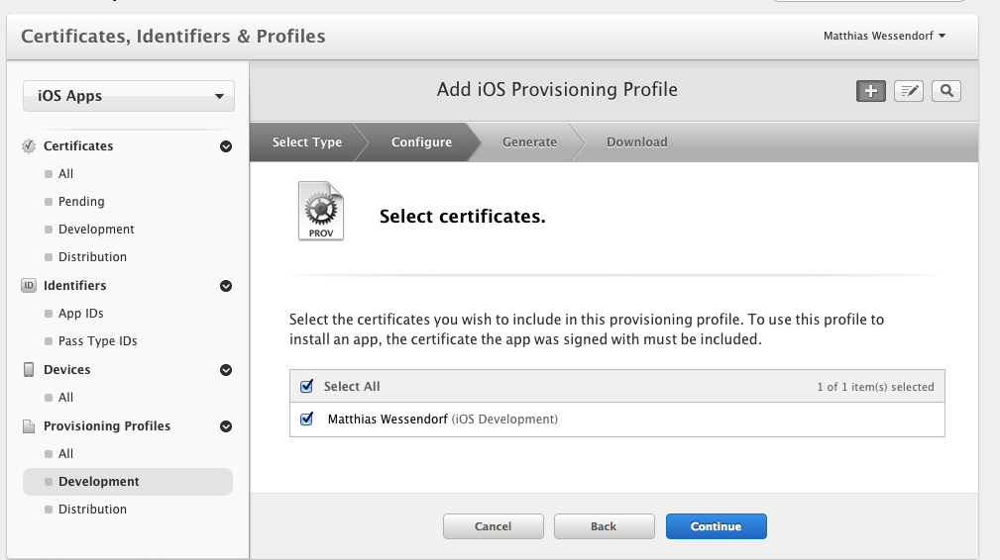
Select a Test Device, this is usually your phone, which is already known by Xcode:

Give it a Profile Name and generate it:
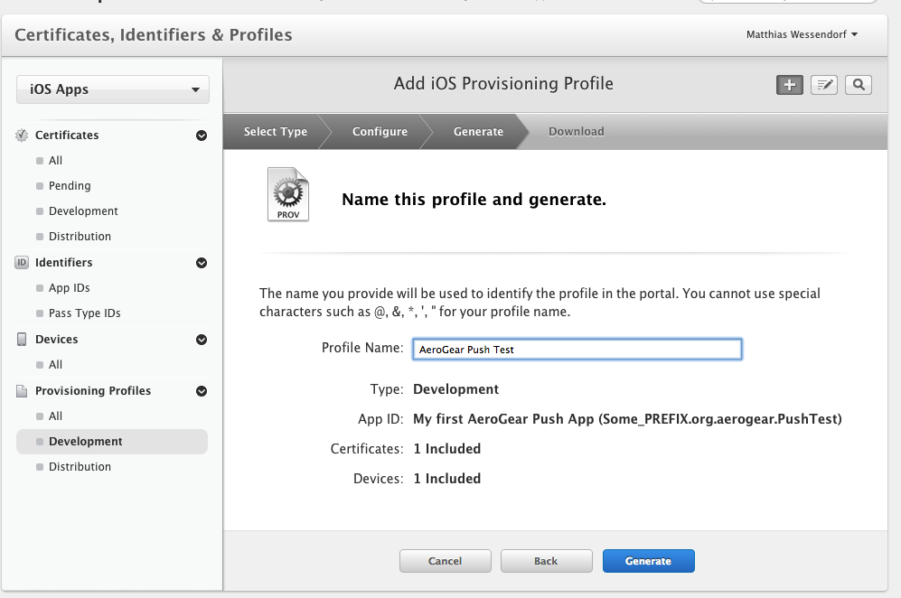
Now download the Profile and open the file. Go to Xcode → preferences… menu, select the "Account" tab, on the right bottom corner click "View details…" and you should see your provisioning profile:
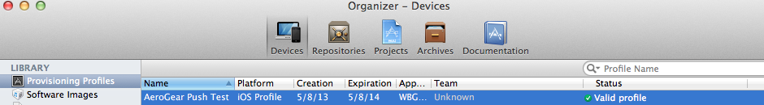
Distribution Provisioning Profile
In order to test Push Notifications on a production environment, you need to create an iOS App Distribution provisioning profile in the Provisioning Portal.

Now, select the App ID, that you created earlier:
Select your Developer Certificate:
You still need a test device to try your production app with your distribution provisioning profile. Select a Test Device, this is usually your phone, which is already known by Xcode:
Give it a Profile Name and generate it:

Now download the Profile and open the file. Go to Xcode → preferences… menu, select the "Account" tab, on the right bottom corner click "View details…" and you should see your provisioning profile:
Settting up Xcode
Now, let’s setup the Xcode
Code signing, app id, provisioning profile
Let’s explain the Apple code signing and provisioning profile approach. It all starts with a developer certificate.
Developer or Distribution certificate
As an iOS developer, chances are you have a certificate, a public key, and a private key on your development machine. A certificate is — very broadly speaking — a public key combined with a lot of additional information that was itself signed by Apple Worldwide Developer Relations CA. This is the certificate you need to renew every year.
Code signing
Code signing is a security technology that allows you to certify that an app was created by you. All apps running on iOS must be code signed.
Entitlements
Entitlements specify which resources of the system an app is allowed to use. These entitlements should all be enabled in the developer center’s App ID, and embedded in the provisioning profile. Setting entitlements to enable Push notification is done in Apple App ID and SSL certificate for APNs.
Provisioning profile
A provisioning profile is a collection of all the components needed to determine if a particular app can run on a particular device. It’s a central point where app-id, list all UUID devices where app can run, certificate and entitlements are gathered together.
Code signing and Provisioning Profile in Xcode: automatic mode
Code signing and provisioning profile selection should be in automatic mode by default. Specifically if your project is used by multiple iOS developpers, let Xcode find the appropriate developer provisioning profile.
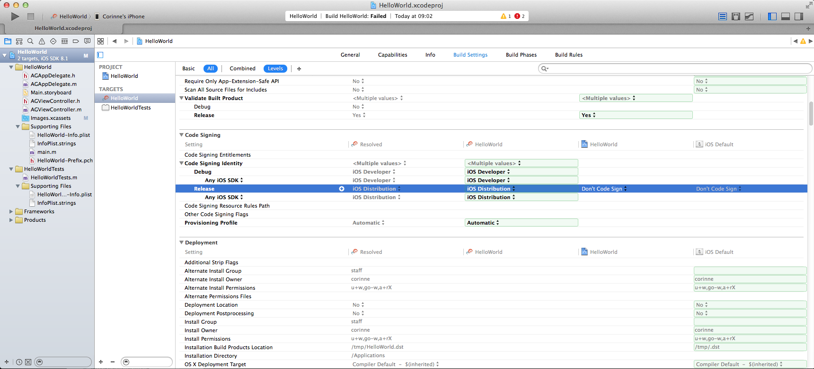
NOTES: The Provisioning profile setting is set to 'None' in Xcode 5. And in Xcode 6, the Provisioning profile setting should be set to 'Automatic' by default. Check apple documentation for more details.
In Xcode 8, a .entitlements file is needed to make push notifications work. To create it, go to the Capabilities section of the project.
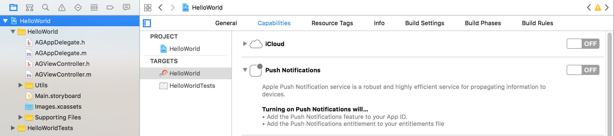
You can see that the Push Notifications switch is in "OFF" state. Click the switch and Xcode 8 will connect with your developer account to add the needed provisioning profiles and will also create the YourProjectName.entitlements file.
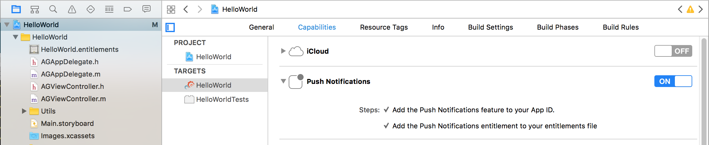
Notice that the status of the Push Notifications switch is now "ON" and there is a new HelloWorld.entitlements file in the left side.
Running into "No matching provisioning profiles found" issue?
Check out iOS troubleshooting guide.
UnifiedPush Server
Now, after managing all the Apple certificates, let’s setup the UnifiedPush Server.
The UnifiedPush Server
With all the Apple work being done, we are now ready to setup the UnifiedPush Server, so that it can be used to connect to APNs for a later message sending.
In the Wizard after you create a PushApplication, click the Add Variant button and fill out the iOS option. You will want to use the certificate, that you created earlier:
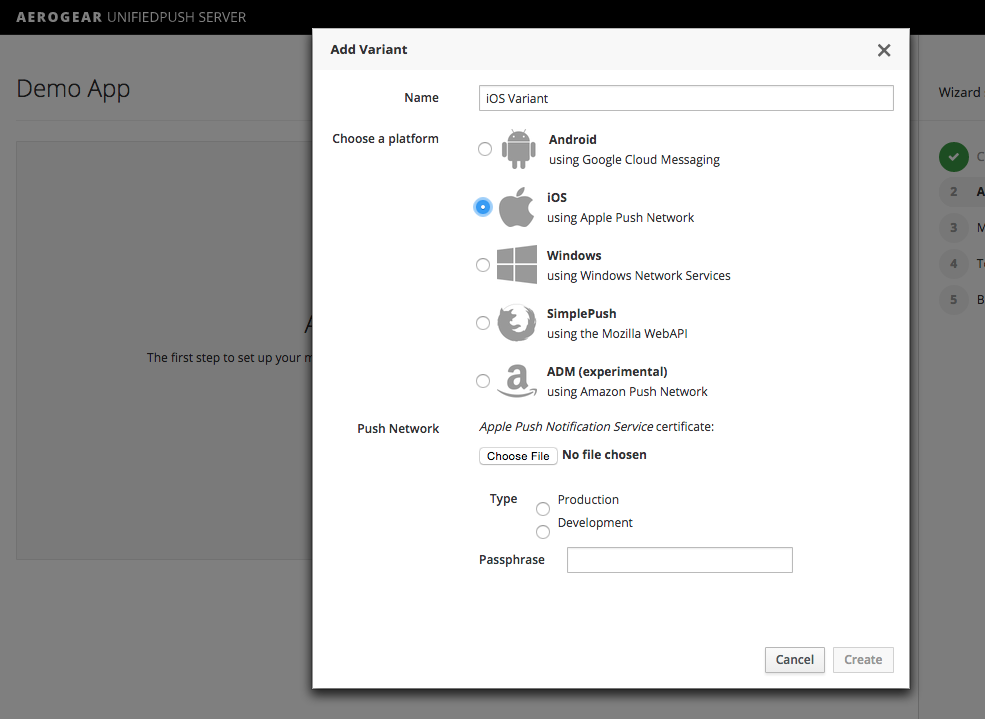
Afterwards you will see some code snippets, containing the Variant ID and Secret, that you can use in your Windows application for the registration of the device, running your app:
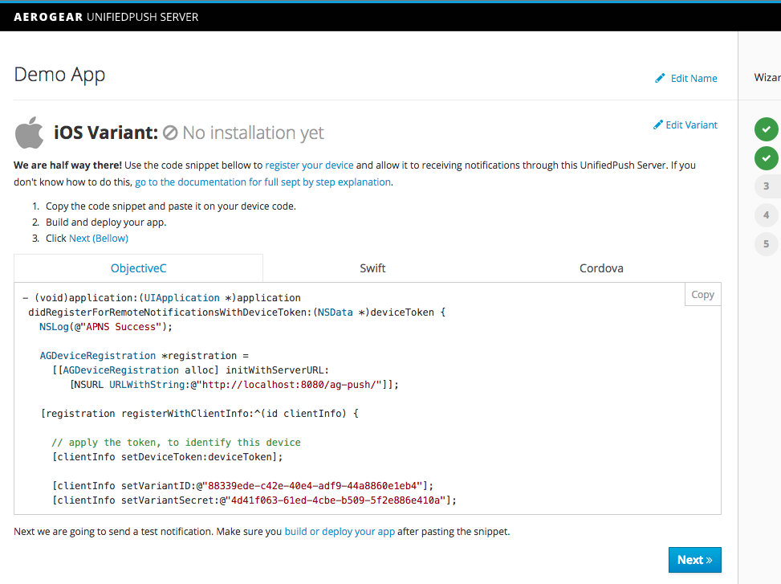
| Clicking on the appropriate tab, you can choose between Objective-C, Swift and Cordova snippet! |
Xcode
The server is now configured. Let’s move to Xcode to create a very simple example application that will connect to the UnifiedPush server and start receiving notifications.
Creating an iOS application
To start, get this HelloWorld Application. It uses our SDK to register your application installation with the iOS Variant you registered earlier!
git clone git@github.com:jboss-mobile/unified-push-helloworld.git
cd ios-swiftHelloWorld App
To open the project, invoke:
open HelloWorldSwift.xcodeprojOnce the project is opened in Xcode, you need to change the Bundle ID, since it has to match the one that you created earlier:
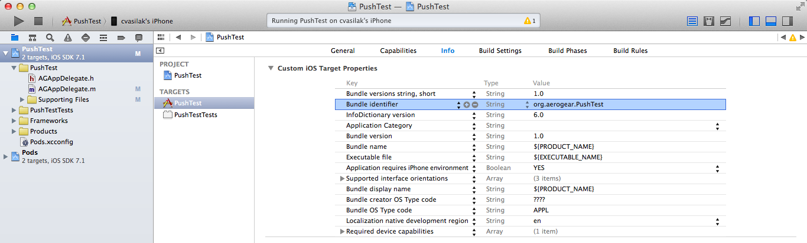
Setting up the iOS Variant ID
Now it is time to look at the code: Open the AppDelegate file.
Here we have removed all the unneeded boilerplate code, in order to focus on getting the Apple Push Notifications to work. The application:didFinishLaunchingWithOptions: method contains a call to the registerForRemoteNotificationTypes to notify the operating system, that this app is interested in different types of Remote Notifications:
func application(application: UIApplication, didFinishLaunchingWithOptions launchOptions: [NSObject: AnyObject]?) -> Bool {
// bootstrap the registration process by asking the user to 'Accept' and then register with APNS thereafter
let settings = UIUserNotificationSettings(forTypes: [.Alert, .Badge, .Sound], categories: nil)
UIApplication.sharedApplication().registerUserNotificationSettings(settings)
UIApplication.sharedApplication().registerForRemoteNotifications()
...
return true
}Note iO7: Instead of iOS8 specific registerUserNotificationSettings use registerForRemoteNotificationTypes. If you want to offer support for both iOS7 and iOS8 in ObjC syntax see this code, for a Swift2 check use #available check.
Once the application is started the FIRST time, it generates the following dialog, where the user has to agree that the application may receive "Push Notification Messages":
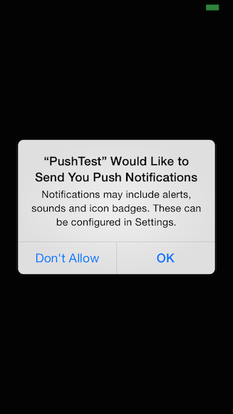
Once the user agrees, Push Messages can be received by the app!
After making sure the user is asked to agree on receiving Push Messages, we need to implement the application: didRegisterForRemoteNotificationsWithDeviceToken: from the UIApplicationDelegate protocol. This is callback is ALWAYS invoked when the user is allowing Push Notifications. It basically delegates the DeviceToken, that your device and the Apple Push Network Service negotiated, to AeroGear Push Server so that it can store it in a "Database" and use it to send messages to it. The deviceToken basically identifies THIS phone with APNs.
Note: Mostly the token stays the same, but there are cases when it may change…
Now let’s look at the important code section:
func application(application: UIApplication, didRegisterForRemoteNotificationsWithDeviceToken deviceToken: NSData) {
// time to register user with the "AeroGear UnifiedPush Server"
let device = AGDeviceRegistration(config: "pushconfig") // [1]
// perform registration of this device
device.registerWithClientInfo({ (clientInfo: AGClientDeviceInformation!) in // [2]
// set the deviceToken
clientInfo.deviceToken = deviceToken
// --optional config--
// set some 'useful' hardware information params
let currentDevice = UIDevice()
clientInfo.operatingSystem = currentDevice.systemName // [3]
clientInfo.osVersion = currentDevice.systemVersion // [4]
clientInfo.deviceType = currentDevice.model // [5]
},
success: {
// successfully registered!
print("successfully registered with UPS!")
// send NSNotification for success_registered, will be handle by registered AGViewController
let notification = NSNotification(name:"success_registered", object: nil)
NSNotificationCenter.defaultCenter().postNotification(notification)
},
failure: {(error: NSError!) in
print("Error Registering with UPS: \(error.localizedDescription)")
let notification = NSNotification(name:"error_register", object: nil)
NSNotificationCenter.defaultCenter().postNotification(notification)
})
}In [1] we initialize our AGDeviceRegistration object reading fhconfig.plist file. See below the content of the config file:
<?xml version="1.0" encoding="UTF-8"?>
<!DOCTYPE plist PUBLIC "-//Apple//DTD PLIST 1.0//EN" "http://www.apple.com/DTDs/PropertyList-1.0.dtd">
<plist version="1.0">
<dict>
<key>serverURL</key>
<string>http://192.168.0.10:8080/ag-push</string>
<key>variantID</key>
<string>a62785ec-2f08-408d-93f3-c4869e0edbfe</string>
<key>variantSecret</key>
<string>7ba81aed-f561-4476-8ecf-45d506800dca</string>
</dict>
</plist>In this file we define the serverURL if the Unified Push Server,the VariantID and VariantSecret (which we received it in the previous chapter when we were registering the iOS Variant with the Push Application).
NOTE: You can not use localhost from the device, you have to use an (internal) IP address, where the AeroGear UnifiedPush Server is running!
| Do not forget to use the development VariantID and VariantSecret if you are using your development provisioning profile as your signing identity in Xcode, or to use production VariantID and VariantSecret if you are using your distribution provisioning profile.) |
Next, in [2] we call registerWithClientInfo passing a configuration block that sets up the parameters needed to register this app with the AeroGear Push Server: the Device Token. It is valid to specify a bit more data on the clientInfo and we do here by setting metadata such the operating system [3], its version [4] and the device type [5].
Callbacks
The success callback is invoked, when the AeroGear UnifiedPush Server was able to register your device with the given iOS Variant. Otherwise the failure callback would be invoked. One case could be a wrong IP address….
The application: didFailToRegisterForRemoteNotificationsWithError: would be invoked if there is a problem in receving a token from APNs…
Metrics
Optionally the iOS SDK supports sending metrics to UPS. Metrics can be used to view how many users have used the message to open the app. This can be important information if you want to know how well your messages are received by your application users.
UPS sends an unique ID for every push message by default all we have to do is send this ID back to UPS when the app was opened using the message:
func application(application: UIApplication, didFinishLaunchingWithOptions launchOptions: [NSObject: AnyObject]?) -> Bool {
// bootstrap the registration process by asking the user to 'Accept' and then register with APNS thereafter
let settings = UIUserNotificationSettings(forTypes: [.Alert, .Badge, .Sound], categories: nil)
UIApplication.sharedApplication().registerUserNotificationSettings(settings)
UIApplication.sharedApplication().registerForRemoteNotifications()
// Send metrics when app is launched due to push notification
AGPushAnalytics.sendMetricsWhenAppLaunched(launchOptions)
...
return true
}If the application is launched using a push notification the sendMetricsWhenAppLaunched static function needs to be invoked within the didFinishLaunchingWithOptions method.
When the app is brought from background to foreground due to a push notification, the following line needs to be added to the didReceiveRemoteNotification method:
func application(application: UIApplication, didReceiveRemoteNotification userInfo: [NSObject: AnyObject], fetchCompletionHandler: (UIBackgroundFetchResult) -> Void) {
// When a message is received, send NSNotification, would be handled by registered ViewController
let notification:NSNotification = NSNotification(name:"message_received", object:nil, userInfo:userInfo)
NSNotificationCenter.defaultCenter().postNotification(notification)
print("UPS message received: \(userInfo)")
// Send metrics when app is brpught form backgrpund tp foreground due to push notification
AGPushAnalytics.sendMetricsWhenAppAwoken(application.applicationState, userInfo: userInfo)
// No additioanl data to fetch
fetchCompletionHandler(UIBackgroundFetchResult.NoData)
}Test the app on your device
Now run the phone on the device. After agreeing on receiving Push Messages, you will see another Dialog, that welcomes you! Now put the app into the background, by clicking the home button.
Sending messages to the device
The last chapter shows how to send messages to the device, using the AeroGear UnifiedPush Server!
Sending messages
Now you have the Sample App running on your phone, so it is time to use the AeroGear UnifiedPush Server for delivering a Push Notification message to your device!
Login to the administration console of the UnifiedPush server and click on the "Send Notification" button on the desired PushApplication and write a message in the text field. Once done, hit the 'Send Push Notification':
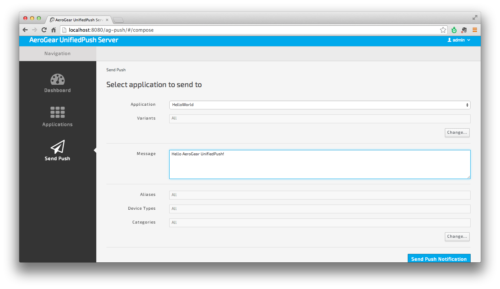
When the application is inactive, and a Push Notification containing the alert key is received by the device, a Popup will show up, which displays the value of the alert key:
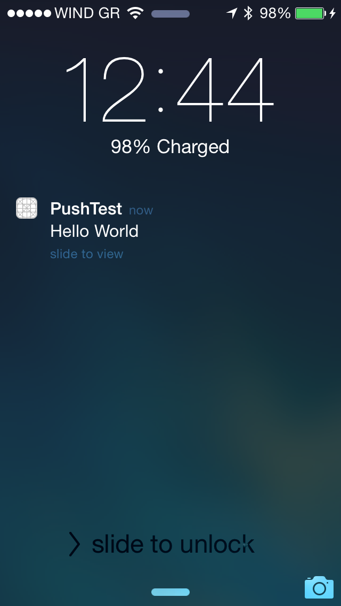
Custom Dialog
To receive the message send by the Unified Push Server console, implement application:didReceiveRemoteNotification: (for foreground notification or application:didReceiveRemoteNotification:fetchCompletionHandler: for background notification.
func application(application: UIApplication, didReceiveRemoteNotification userInfo: [NSObject: AnyObject], fetchCompletionHandler: (UIBackgroundFetchResult) -> Void) {
// When a message is received, send NSNotification, would be handled by registered ViewController
let notification:NSNotification = NSNotification(name:"message_received", object:nil, userInfo:userInfo)
NSNotificationCenter.defaultCenter().postNotification(notification)
print("UPS message received: \(userInfo)")
// No additioanl data to fetch
fetchCompletionHandler(UIBackgroundFetchResult.NoData)
}In this example, we send a the entire notification object in NSNotificationCenter. Once intersepted the following method will process and sipaly the message contined in the notification:
func messageReceived(notification: NSNotification) {
let obj:AnyObject? = notification.userInfo!["aps"]!["alert"] // [1]
// if alert is a flat string
if let msg = obj as? String { // [2]
messages.append(msg)
} else { // [3]
// if the alert is a dictionary we need to extract the value of the body key
let msg = obj!["body"] as! String
messages.append(msg)
}
tableView.reloadData()
}The object received as NSDictionary which represents a JSON map, of the received payload. The aps field of that map contains all the received attributes, like the earlier mentioned alert key/value pair [1].
If the Unified Push Server is 1.0.X the alert is aa string as in [2], if Unified Push Server is 1.1.x, the alort is an objet as shown in [3].
The code simply reads the value of the alert key and displays in a UITableView as shown below:
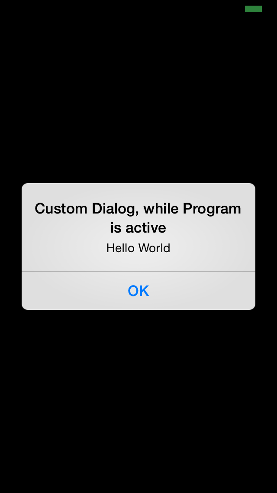
Custom Keys
Besides reading the standard keys, like alert the UnifiedPush Server supports custom keys, which could have an application specific meaning. Admin console currently doesn’t support the use of custom keys, but you can easily use cURL instead (check the REST API documentation for more information on how to construct the cURL request).
| If you are using the Java Sender to send push notifications on the server side, simply call ".attribute("some_key", "with_value")" when building the message payload. Check the documentation here for more details. |
Reading the value of your own keys is as simple as in the above snippet about the custom dialog:
let customValue = userInfo.valueForKeyPath("customKey")Now the evaluated value can be used inside of the iOS application.
iOS 7
In iOS 7 there is a new callback which, in addition to the normal foreground processing, allows the application to process messages while it is running in the background.
Note: If your application has no need for background processing, using the above method is recommended.
func application(application: UIApplication, didReceiveRemoteNotification userInfo: [NSObject: AnyObject], fetchCompletionHandler: (UIBackgroundFetchResult) -> Void) {
// 'userInfo' contains information related to the remote notification.
// should always be called at the end of processing so
// the system can take a UI snapshot of the application.
fetchCompletionHandler(UIBackgroundFetchResult.NoData)
}Using this method, the iOS platform processes the notification and launches the application in the background. This helps to shrink the time between seeing a push notification and displaying the actual data in the iOS application, as the download of the data for the push notification (if really needed) starts in the background as well.
Enabling Background Notifications
In order to get background processing for push notifications to work you have to open your Applications' Info.plist file:
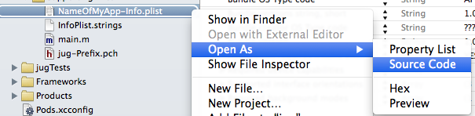
and include the following XML:
<key>UIBackgroundModes</key>
<array>
<string>remote-notification</string>
</array>Sending Notifications for Background Processing
To ensure that your message is really received by our application when it is in background mode, you need to include the content-available flag into your message payload. Admin console currently doesn’t support setting this flag, but you can easily use cURL instead (check the REST API documentation for more information on how to construct the cURL request).
| If you are using the Java Sender to send push notifications on the server side, simply call ".contentAvailable()" when building the message payload. Check the documentation here for more details. |
iOS 8
iOS 8 provides support for interactive notifications. To utilise it, follow these steps:
-
add extra payload "action-category" in server side notification
-
add category in your client app with the same name as the one in payload
-
add action button logic
If you want a complete example that demo’s interactive notification refer to AeroDoc.
Sending interactive notifications : extra payload
All you need to do is include "action-category":"YOUR_ACTION_NAME" into your message payload. Admin console currently doesn’t support setting this in the payload, but you can easily use cURL instead (check the REST API documentation for more information on how to construct the cURL request).
| If you are using the Java Sender to send push notifications on the server side, simply call ".actionCategory()" when building the message payload. Check the documentation here for more details. |
Note: APNs interactive notification adds category to its payload to associate a group of actions to a category of notification. As UPS already uses the name 'categories' in its payload but for a different purpose, the name 'action-category' was chosen instead.
Receiving interactive notifications : add category
When registering for remote notification, provide a category. To define a category, add all associated actions. Here we demo only action but you can define a list.
Depending on your notification setup, the list of visible actions can be limited. Using UIUserNotificationActionContextMinimal you can define which actions should be displayed in priority when space is limited.
- (UIMutableUserNotificationCategory*)registerActions {
UIMutableUserNotificationAction* action = [[UIMutableUserNotificationAction alloc] init];
action.identifier = @"YOUR_ACTION_NAME";
action.title = @"YOUR_ACTION_NAME";
action.activationMode = UIUserNotificationActivationModeForeground;
action.destructive = false;
action.authenticationRequired = false;
UIMutableUserNotificationCategory* category = [[UIMutableUserNotificationCategory alloc] init];
category.identifier = @"YOUR_CATEGORY_NAME";
[category setActions:@[action] forContext: UIUserNotificationActionContextDefault];
return category;
}Once all actions are defined and wrapped into a category, add category to UIUserNotificationSettings as shown below:
- (BOOL)application:(UIApplication *)application didFinishLaunchingWithOptions:(NSDictionary *)launchOptions {
// when running under iOS 8 we will use the new API for APNS registration
#if __IPHONE_OS_VERSION_MAX_ALLOWED >= 80000
if ([application respondsToSelector:@selector(registerUserNotificationSettings:)]) {
UIUserNotificationCategory* category = [self registerActions];
NSMutableSet* categories = [NSMutableSet set];
[categories addObject:category];
UIUserNotificationSettings* notificationSettings = [UIUserNotificationSettings settingsForTypes:UIUserNotificationTypeAlert | UIUserNotificationTypeBadge | UIUserNotificationTypeSound categories:categories];
[[UIApplication sharedApplication] registerUserNotificationSettings:notificationSettings];
[[UIApplication sharedApplication] registerForRemoteNotifications];
} else {
[[UIApplication sharedApplication] registerForRemoteNotificationTypes: (UIRemoteNotificationTypeBadge | UIRemoteNotificationTypeSound | UIRemoteNotificationTypeAlert)];
}
#else
[[UIApplication sharedApplication] registerForRemoteNotificationTypes: (UIRemoteNotificationTypeBadge | UIRemoteNotificationTypeSound | UIRemoteNotificationTypeAlert)];
#endifDealing with interactive notifications : add action
When an action has been selected in the interactive push notification, the callback application:handleActionWithIdentifier:forRemoteNotification:completionHandler: is called. To implement your action you need to check on which action was chosen:
#if __IPHONE_OS_VERSION_MAX_ALLOWED >= 80000
- (void)application:(UIApplication *)application handleActionWithIdentifier:(NSString *)identifier forRemoteNotification:(NSDictionary *)userInfo completionHandler:(void(^)())completionHandler {
if([identifier isEqualToString: @"YOUR_ACTION_NAME"]) {
...
...
}
completionHandler();
}
#endifYou are done
That’s all you need to use the AeroGear project for sending, and receiving Push Notifications for an iOS device.
A final note
When using Push Notifications, have in mind that it’s more for signaling and once in a while notifying a client. The app has to, by Apple’s guidelines, function without receving Push Notifications. Remember: The user could have disagreed after installing your app!
iOS Troubleshooting
This troubleshooting guide takes as a pre-requesite that you have carefully followed the instructions in the iOS tutotial.
Something goes wrong, you have the symptoms and you would like to know how to fix it. Follow the guide of frequently asked questions below and if you still can’t find an answer to your problem, don’t hesitate to ask our mailing list.
Question: No matching provisioning profiles found
Problem description
Running a client app, you run into "No matching provisioning profiles found":
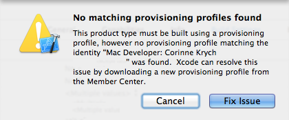
Answer
-
have you changed your computer recently? If yes, if you provisioning profile was deliver in your previous machine, you need to migrate your provisioning profile, please follow Exporting Your Signing Identities and Provisioning Profiles Apple documentation.
-
is it the first time you use this app? have you followed the pre-requisite section on provisioning profile?
Question: Remote host closed connection during handshake
Problem description
When sending a push notification you are receicing an 'Remote host closed connection during handshake'
javax.net.ssl.SSLHandshakeException: Remote host closed connection during handshakeAnswer
Your .p12 is not good. You need to create a .p12 out of your certificate as described in Apple App ID and SSL certificate for APNs?
Question: APNs error
Problem description
You have implemented application:didFailToRegisterForRemoteNotificationsWithError:. When launching the app, you get the eror no valid 'aps-environment':
Domain=NSCocoaErrorDomain Code=3000 "no valid 'aps-environment' entitlement string found for application" UserInfo=0x1555edc0 {NSLocalizedDescription=no valid 'aps-environment' entitlement string found for application}Answer
Your Bundle ID name should match with the Bundle ID as created on Apple’s developer portal. Please refer to [Apple App ID and SSL certificate for APNs](app-id-sll-certificate-apns.asciidoc) documentation for more details on configuration.
Question: My registration to UPS never happens
Problem description
The success callback application:didRegisterForRemoteNotificationsWithDeviceToken: is never called.
Answer
-
implement application:didFailToRegisterForRemoteNotificationsWithError: to track any issue with APN registration. In the body of the method, print an error message as shown below:
- (void)application:(UIApplication *)application didFailToRegisterForRemoteNotificationsWithError:(NSError *)error {
// something went wrong, while talking to APNs
// for now we simply log the error
NSLog(@"APNs Error: %@", error);
}
If you do enter the failure callback then your problem is similar to APNs error
-
If you do not enter the error callback, check you actually did register for remote notifications. Note: with iOS8, your remote registration to APNs is splitted into 2 methods call. See code snippet in Compilation error in Xcode6
Question: My registration fails because of nil deviceID
Problem description
UPS registration fails with the following error:
assertion failed: 'token' should be set: file /.../aerogear-push-ios-registration/push-sdk-swift/AGDeviceRegistration.swift, line 75Answer
In application like Contacts app where UPS registration does not happen in AppDelegate but later in the flow, at Login, we save deviceID in NSUserDefaults within application:didRegisterForRemoteNotificationsWithDeviceToken. However, if the method application:didRegisterForRemoteNotificationsWithDeviceToken: is not called, deviceID is nil causing UPS registration to fail.
To solve the problem, refer to My registration to UPS never happens
Question: Compilation error in Xcode6
Problem description
When trying to run my Xcode5 app in Xcode6, I run into compilation error.
Answer
Since iO8, registerForRemoteNotificationTypes has been deprecated in favour of registerUserNotificationSettings: with registerForRemoteNotifications. The API unifies notification settings whether it’s a remote or user notification. If you want to be able to run either using Xcode5 or Xcode6 on iOS7 or iOS8, use the macro as shown below:
#if __IPHONE_OS_VERSION_MAX_ALLOWED >= 80000
if ([application respondsToSelector:@selector(registerUserNotificationSettings:)]) {
UIUserNotificationSettings* notificationSettings = [UIUserNotificationSettings settingsForTypes:UIUserNotificationTypeAlert | UIUserNotificationTypeBadge | UIUserNotificationTypeSound categories:nil];
[[UIApplication sharedApplication] registerUserNotificationSettings:notificationSettings];
[[UIApplication sharedApplication] registerForRemoteNotifications];
} else {
[[UIApplication sharedApplication] registerForRemoteNotificationTypes: (UIRemoteNotificationTypeBadge | UIRemoteNotificationTypeSound | UIRemoteNotificationTypeAlert)];
}
#else
[[UIApplication sharedApplication] registerForRemoteNotificationTypes: (UIRemoteNotificationTypeBadge | UIRemoteNotificationTypeSound | UIRemoteNotificationTypeAlert)];
#endifQuestion: Failure to connect when server uses a self-signed certificate
Problem description
When trying to connect to a server that uses a self-signed certificate, the application fails to connect with the following message:
Domain=NSURLErrorDomain Code=-1202 "The certificate for this server is invalid. You might be connecting to a server that is pretending to be “example.com” which could put your confidential information at risk." UserInfo=0x14a730 {NSErrorFailingURLStringKey=https://example.com/, NSLocalizedRecoverySuggestion=Would you like to connect to the server anyway?, ..}Answer
By default, the underlying networking foundation rejects connections to server’s that use a self-signed certificate and you need to take extra measures in order to make it work. Although the following snippets of code can bypass the built-in security check, they are not recommended unless you are working in a development sandbox and you need a quick-and-dirty solution for internal testing. You can find more information on self-signed certificates on Apple technote paper as well in this page here that summarizes possible solutions when you take your app in production.
Objective-C
If you are using Objective-C, modify the AGDeviceRegistration.m source code and add the following function:
- (void)URLSession:(NSURLSession *)session didReceiveChallenge:(NSURLAuthenticationChallenge *)challenge completionHandler:(void (^)(NSURLSessionAuthChallengeDisposition, NSURLCredential *))completionHandler {
if([challenge.protectionSpace.authenticationMethod isEqualToString:NSURLAuthenticationMethodServerTrust] && [challenge.protectionSpace.host isEqualToString:_baseURL.host]) {
NSURLCredential *credential = [NSURLCredential credentialForTrust:challenge.protectionSpace.serverTrust];
completionHandler(NSURLSessionAuthChallengeUseCredential,credential);
} else {
completionHandler(NSURLSessionAuthChallengeCancelAuthenticationChallenge, nil);
}
}Swift
If you are using Swift modify the AGDeviceRegistration.swift source code and add the following function:
public func URLSession(session: NSURLSession, task: NSURLSessionTask, didReceiveChallenge challenge: NSURLAuthenticationChallenge, completionHandler: (NSURLSessionAuthChallengeDisposition, NSURLCredential!) -> Void) {
if challenge.protectionSpace.authenticationMethod == NSURLAuthenticationMethodServerTrust && challenge.protectionSpace.host == serverURL.host! {
let credentials = NSURLCredential(forTrust: challenge.protectionSpace.serverTrust!)
completionHandler(NSURLSessionAuthChallengeDisposition.UseCredential, credentials)
} else {
completionHandler(NSURLSessionAuthChallengeDisposition.CancelAuthenticationChallenge, nil)
}
}